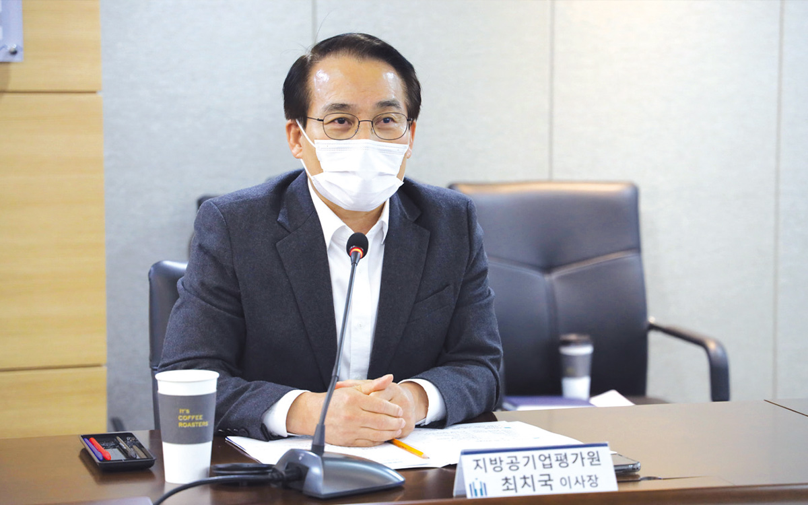

전 세계는 지금 대기오염과의 전쟁을 치르고 있다. 환경문제가 세계적인 위협이 되고 있는 가운데 세계 각국은 첨단정보기술을 활용해 미세먼지 피해를 줄일 수 있는 정책을 세우고 다양한 시도들을 꾀하고 있다. 최근에는 미세먼지 해결을 위한 사물인터넷, 빅데이터, AI의 활용에서 나아가 드론, 블록체인의 활약이 주목을 받고 있다. 향후 시대의 변화, 기술의 발전에 따라 미세먼지 피해를 줄이고 완화하는 데에 첨단정보기술은 미래사회에 큰 변화를 줄 것으로 기대된다.
글 편집실

미세먼지 저감을 위한 각국의 노력과 다양한 기술
우리나라보다 먼저 미세먼지로 몸살을 앓았던 도시들은 어떻게 미세먼지를 극복하고 있을까. 영국은 미세먼지의 원인을 찾기 위해 대기 환경 모니터링 제도를 운영하고 있다. 해마다 대기 환경 상태 정보 보고서를 발간하고 모니터링을 통해 수집한 정보를 ‘맑은 길 찾기(Find a clean air route)’ 앱으로 시민들에게 공개하고 있다. 이렇게 수집된 미세먼지 자료는 대기질 개선 제도에 활용된다.
다양한 제도를 펼치고 있는 프랑스 파리는 최근 크리테르 (Crit’Air) 제도를 도입하여 경유차의 제조 시기와 배출량에 따라 5등급으로 나누어 관리하고 노후 경유차의 경우 파리 진입을 제한하고 있다. 또 전기차나 수소전기차를 구매하는 소유주에게 보조금을 지원하는 인센티브 제도, 나무 보일러 환경 인증 제도를 마련하는 등 미세먼지 문제의 근본적인 해결을 위해 노력하고 있다.
일본은 대기 중의 이산화황의 농도를 낮추기 위해 우선 황 함유량이 낮은 원유를 수입하는 동시에 중유를 탈황하고, 배출가스를 제어하는 기술 개발에 앞장서고 있다. 공해 주범인 노후화된 디젤 자동차가 배출가스 기준을 충족하지 못할 경우 운행을 중단시키고 벌금을 부과하는 ‘디젤차 NO’ 정책을 시행하였다.
국내에서는 각 지자체가 스마트시티 조성을 통해 미세먼지 해결에 대응하고 있다. 빅데이터를 기반으로 한 미세먼지 대응시스템을 개발하고 있는 남양주시를 비롯, 부천시의 미세먼지 클린 특화단지 조성, 판교의 미세먼지 프리존 등 다양한 시도가 이뤄지고 있다. 향후 미세먼지 저감 정책에 관한 개별 지방정부의 한계를 극복하기 위한 공동 대응 방안에도 적극 나설 것으로 예상된다.
관련 기술이 빠르게 발전하면서 드론의 활용 영역이 넓어지고 있는 가운데 드론의 활약은 환경 분야로도 이어진다.
센서와 카메라를 장착한 기상관측용 드론은 사업장의 오염물질을 실시간으로 확인하고 불법행위를 촬영하여 배출원을 확인할 수 있다. 특히 이 드론을 활용하면 기온, 습도, 기압, 풍향, 풍속 등 기상정보를 수집하는 한편, 초미세먼지를 정밀 관측하고 미세먼지 이동 방향을 확인할 수 있다. 미세먼지의 질량과 수농도 측정 센서를 장착해 미세먼지 농도를 실시간으로 확인할 수 있고, 영하 35~40도, 최대풍속 초속 10m 등 극한 외부환경에서도 운용할 수 있다는 장점도 있다. 또 기체에 장착된 센서를 통해 수집된 데이터는 사물인터넷(IoT)망을 이용해 웹 또는 애플리케이션으로 실시간 전송해 사용자가 빠르게 환경정보를 확인할 수 있다.
현재의 관측 방식으로는 초미세먼지 원인과 이동 경로를 밝혀내는 것은 어렵지만, 기상관측용 드론을 활용하면 미세먼지의 경로 분석, 도심의 미세먼지 블록 파악, 이동 경로 분석 및 예측에 따른 미세먼지 정보를 확인할 수 있게 된다. 현재는 드론을 상용화하는 데에 한계가 있지만 향후 전자, 통신, 하드웨어의 모든 분야가 융복합해서 적용된다면 드론은 기상정보와 미세먼지를 해결하는 데에 한 걸음 더 진보하게 될 것이다.
대기오염 잡는 해결사로 주목 받는 블록체인
전 세계는 파리협정을 맺어 지구의 온도 상승을 산업화 이전과 대비해 2°C로 제한하겠다는 목표 설정에 합의했고, 연간 1천억 달러 규모의 공공 및 민간 자금을 조성해 기후 위협에 대응하기로 정하였다. 세계 기후에 있어 중요한 문제는 기후 협약이 잘 지켜지고 있는지, 탄소배출권이 어떻게 거래되는지를 정확히 추적할 수 있는가 하는 점이다. 이때 블록체인 기술은 환경문제를 해결하는 데에도 활용되고 있다.
일례로 중국 기업인 에너지 블록체인 랩(Energy-Blockchain Labs)은 IBM과 협업해 탄소 배출을 관리하는 플랫폼을 개발했다. 이 플랫폼은 블록체인 네트워크 참여자들의 에너지 생산과 소비 활동이 환경에 끼치는 영향을 추적 및 수치화해 기록하고 플랫폼 참여자들에게 투명하게 공개해 탄소 배출이 많은 기업은 탄소배출권을 구매할 수 있도록 지원한다. 즉 블록체인 기술로 중국 미세먼지의 원인으로 꼽히는 여러 공장의 탄소 배출을 관리해 궁극적으로 저탄소 배출을 이끌어내고 더 나아가 환경 보전에 큰 역할을 한다는 것이다.
우선 에너지 블록체인 랩은 탄소 자산 개발 플랫폼을 통해 중국 영토가 너무 넓어 탄소배출권 거래를 위한 시장 자체를 만들기 어려웠던 문제점을 해결할 수 있게 되었다. 네트워크 참여자인 중앙 정부, 지방 정부, 탄소배출권 거래소, 탄소배출 검사·인증기관 등 모든 이해 관계자들이 데이터에 원활하게 접근할 수 있어 기업들의 탄소배출 할당량의 진행 상황을 쉽게 모니터링할 수 있다. 기업들 역시 자사의 탄소배출량을 쉽게 파악할 수 있어 탄소배출권을 언제 판매하고 구매해야 하는지 확인할 수 있다.
이처럼 블록체인 플랫폼을 활용해 미세먼지 배출량 추적, 친환경 에너지 사용 촉진, 탄소배출권 거래 활성화 등이 가능할 것으로 기대를 모으고 있다.